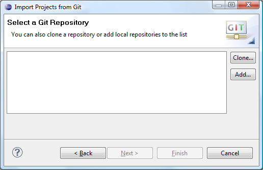
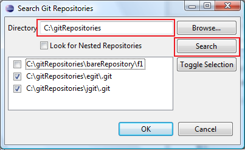
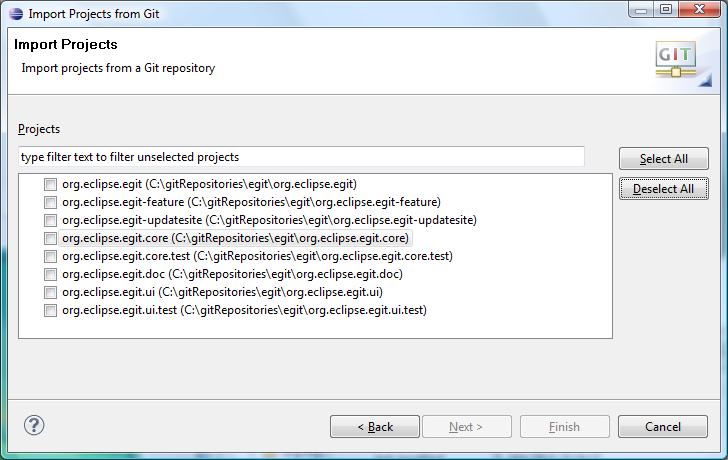
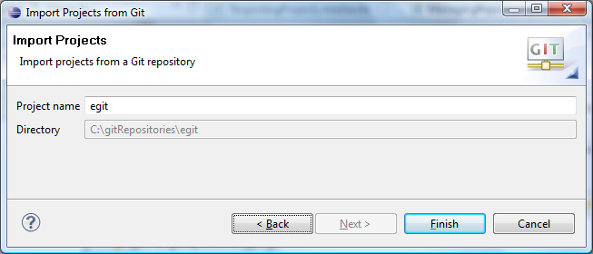
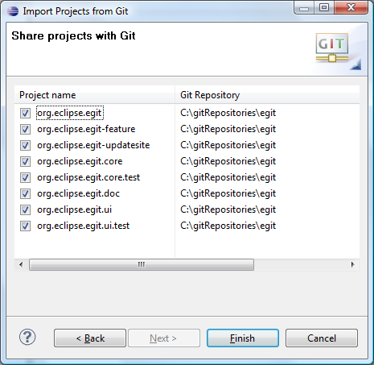

| Starting from existing Git Repositories | ||
|---|---|---|
|
|
|
|
| Creating Repositories | Working with remote Repositories | |
In order to work with the contents of a Git Repository in the Eclipse workbench, the files and folders contained in this repository must be imported in the form of projects. In principle, this import step can be done using the generic "New Project" or "Import..." wizards, since the working directory of a Git Repository is just a normal directory in the local file system. However, the newly created projects would still have to be shared manually with Git. The "Import Projects from Git" wizards integrates project import and sharing and also offers some extra convenience.
The wizard is started using
Import > Git > Projects from Git

If you started in a clean workspace, the first page will display an empty list:

Before you can continue, you need to add one or several Git Repositories to the list.
If you have already Repositories in the list, the following step is optional.
There are two ways to add Git Repositories to the list:
The first option is used if you start with a remote repository. The clone operation will copy that Repository to your local file system. The Clone wizard is started using the Clone... button next to the Repository list. The Clone wizard is described in more detail elsewhere. Upon successful completion of the clone wizard, the newly cloned Repository should appear in the list automatically.
The second option is useful if you already have a repository in your local file system, for example because you have cloned it earlier, you created it from scratch or you copied it from somewhere else. Clicking on the Add... button next to the Repository list, a dialog is displayed which allows to enter a directory in the local file system. Press Search to trigger a scan for Git repositories contained in this directory. If Git repositories are found, they will be shown in a list and you can select repositories to add:

After successful completion, the repository list should contain some repositories:

You can now select a Repository and click Next. On the following wizard page, you will have to decide:

If this radio button is selected, the wizard will scan the local file system for .project files and display the projects found for being imported. This is the most comfortable solution and should be used if .project files are checked into the Repository.
In this case, the directory tree at the bottom is active. You can limit the search for .project files by selecting a folder in this tree, otherwise the complete working directory of the Repository will be scanned. On the next page, a list of the found projects (if any) will be shown. This is very similar to the generic Import Existing Projects wizard, but has some additional filtering capabilities:

When this option is chosen, this wizard branches to the generic "New Project" wizard. After completion of the "New Project" wizard, this wizard will resume and help you with sharing the newly created projects (if any) created using the "New Project" wizard.
In this case, the directory tree at the bottom is inactive, as the selection is not relevant for the "New Project" wizard.
This option can be helpful when there are neither .project files available nor a suitable "New Project" wizard applies to the content of the Git Repository. If chosen, the wizard will generate a .project file and point the project to a folder of the Repository's working directory. The result is a "General Project".
By default, the newly generated project will point to the working directory of the Repository. By selecting some folder from the directory tree at the bottom, you can have the project generated for that folder.
When clicking Next you will see a simple dialog suggesting a name and a directory for the new project:

The name will be suggested to be the same as the name of the directory.
The newly created projects (if any) must be shared with the correct Git Repository in order to become part of the Git Team Provider. The following options for doing this share are provided:
This is the recommended option: the wizard will automatically detect newly created projects and find the corresponding Repository automatically. No user interaction is required. If automatic sharing fails, the projects will simply remain unshared. You can share them any time manually.
This might be useful for very special circumstances where the automatic detection fails. Note that this will block the UI until project import is completed.
A page will be shown with the newly created projects and the corresponding Repositories. Using the check boxes, you can decide which projects to share:

This may be helpful if you want to share projects manually for some reason.
|
|

|
|
| Creating Repositories | Working with remote Repositories |